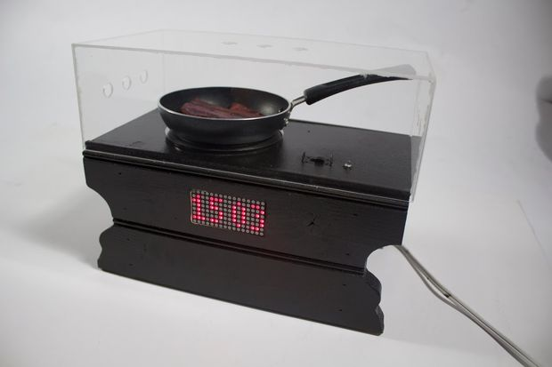
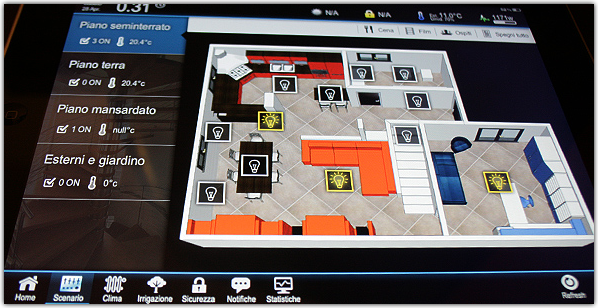
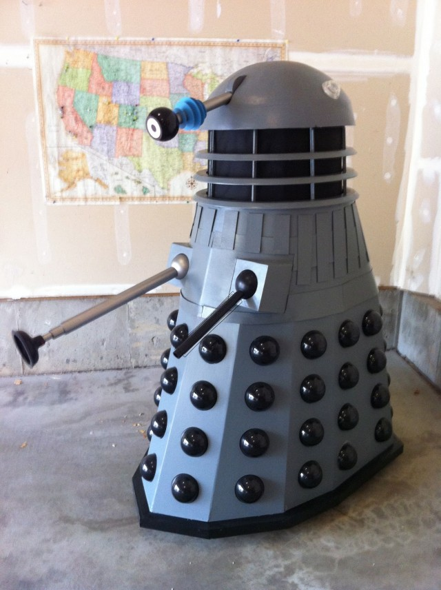
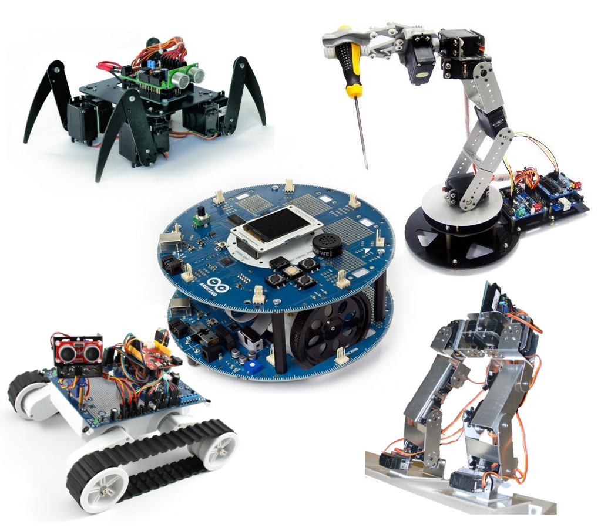
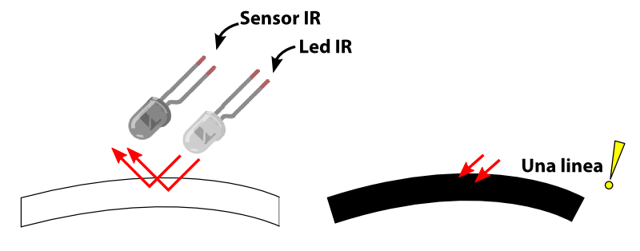

University of Salamanca ACM student chapter
Arduino
ACM USAL / @acmSalamanca¿Qué es?
Plataforma libre de software y hardware
Hardware
Hardware
- Microcontrolador Atmega: Cerebro de la placa
- Pines: conectar sensores/actuadores para controlar dispositivos periféricos
- USB para cargar programas
- Memoria interna, unos pocos bytes (SRAM y EPROM)
Software
Basado en Wiring
Programación en C, C++
Entorno basado en Processing
Funciones base: loop() y setup()
En pocas líneas se consiguen proyectos elaborados
¿Para qué sirve Arduino?
Para lo que se te ocurra
¿Para qué sirve Arduino?
Despertador por Bacon
¿Para qué sirve Arduino?
Smartwatch personalizado
¿Para qué sirve Arduino?
Domótica
¿Para qué sirve Arduino?
Exterminate!
Arduino es diferente
Programar microcontroladores puede ser una tarea complicada
Arduino simplifica enormemente la tarea
Arduino es fácil
Tanto la programación del equipo como el hardware es fácil y versátil
Gracias a los módulos compatibles podemos expandir la funcionalidad con poco esfuerzo
Do-it-yourself!
Crear un sistema Arduino para tus propias necesidades es muy sencillo
Multitud de recursos y herramientas.
Baratas y sencillas de utilizar
Primer programa
Primer programa
void setup(){
Serial.begin(9600);
pinMode(ledAzul, OUTPUT);
pinMode(ledVerde, OUTPUT);
}
void loop(){
Serial.println("HOLA MUNDO");
digitalWrite(ledAzul,HIGH);
delay(1000);
digitalWrite(ledVerde,LOW);
delay(1000);
}
Control de entrada/salida
Arduino incluye métodos para obtener y enviar información a través de los pines
int valor = analogRead(PIN)=> 0-1023int val = digitalRead()= >HIGH|LOWdigitalWrite(PIN, HIGH|LOW)analogWrite(PIN, 0-255)
*cuidado! Se hace en un pin digital (PWM)
Carga de programas
¡No es necesario un programador de microcontroladores!
Con un cable USB cargamos el programa desde el IDE
Ejemplo 1
Parpadeo de un LED
- 1 LED
- 1 resistencia
Ejemplo 1
Cálculo de la resistencia
- Alimentacion: 5v
- Tensión que soporta el LED: 1.9v a 3.5v (según color)
- Intensidad de funcionamiento: 15mA
- Resistencia = 100 Ohm
¡El pin 13 lleva ya una resistencia incorporada!
Ejemplo 1
int pinLed = 12;
void setup()
{
pinMode(pinLed, OUTPUT); //Le decimos que el pin 12 actura como salida para dar los 5V
}
void loop ()
{
digitalWrite(pinLed, HIGH); //Le decimo que ponga el pin 12 a HIGH, para dar voltaje
delay(1000);
digitalWrite(pinLed, LOW); //Le decimos que pare el voltaje
delay(1000);
}
Ejemplo 2
LEDs secuenciales
- 3 LED
- 3 resistencias 100 Ohm
Ejemplo 2
int tiempo = 200;
int leds[] = {4,5,6,7};
void setup()
{
for(int i=0;i<4;i++) pinMode(leds[i],OUTPUT);
}
void loop()
{
secuencia();
}
void secuencia()
{
for (int i = 0; i < 4; i++)
{
digitalWrite(leds[i],HIGH);
delay(tiempo);
digitalWrite(leds[i],LOW);
delay(tiempo);
}
}
Ejemplo 3
Sensor de luz
- 1 LED
- 2 resistencias 100 Ohm
- 1 sensor LDR
Ejemplo 3
int led = 9;
int ldr = 0;
int luz = 0;
void setup()
{
// pinMode(led,OUTPUT);
Serial.begin(9600); //Inicio de puerto serie a 9600bps
}
void loop()
{
luz=analogRead(ldr);
monitorizar();
if (luz <= 30) analogWrite(led,255);
if (luz >= 30) analogWrite (led,0);
}
void monitorizar()
{
Serial.print("El valor de luz es: ");
Serial.println(luz);
delay(1000);
} Robots!
ACM-E
ACM-E
ACM-E
Siguelineas
Emisor/Receptor Infrarrojo
Emisor/Receptor Infrarrojo
Emisor/Receptor Infrarrojo
Emisor/Receptor Infrarrojo
#define UMBRAL 700
int pinLecturaIR = A0;
int pinLED = 6;
void setup()
{
Serial.begin(9600);
pinMode(pinLED, OUTPUT);
}
void loop()
{
int lecturaIR = analogRead(pinLecturaIR);
Serial.println(lecturaIR);
if(lecturaIR > UMBRAL)
{
digitalWrite(pinLED, HIGH);
}
else
{
digitalWrite(pinLED, LOW);
}
} Lógica
Muchas opciones:
- Sencillo (condicional)
- Complejo (PID)
- Divertido (Red neuronal)
Lógica
Uno o más sensores
Lógica
Lógica
#define UMBRAL 700
int pinLecturaIRI = A2;
int pinLecturaIRC = A1;
int pinLecturaIRD = A0;
int pinLEDI = 6;
int pinLEDD = 7;
void setup()
{
Serial.begin(9600);
pinMode(pinLEDI, OUTPUT);
pinMode(pinLEDD, OUTPUT);
}
void loop()
{
int lecturaIRI = analogRead(pinLecturaIRI);
int lecturaIRC = analogRead(pinLecturaIRC);
int lecturaIRD = analogRead(pinLecturaIRD);
Serial.print("Izquierda: ");
Serial.println(lecturaIRI);
Serial.print("Derecha: ");
Serial.println(lecturaIRC);
Serial.print("Centro: ");
Serial.println(lecturaIRD);
if(lecturaIRI > UMBRAL)
{
girarDerecha();
}
else if(lecturaIRD > UMBRAL)
{
girarIzquierda();
}
else if(lecturaIRC > UMBRAL)
{
avanzarRecto();
}
}
Motores
Configuración diferencial:
Motores
Configuración diferencial:
Controlador de motores
L298N:
- Controla dos motores
- Velocidad
- Sentido (Puente H)
- Alimentación externa
Controlador de motores
Controlador de motores
Motores
void girarIzquierda()
{
digitalWrite(motorAIn1, HIGH);
digitalWrite(motorAIn2, LOW);
digitalWrite(motorBIn3, HIGH);
digitalWrite(motorBIn4, LOW);
analogWrite(motorAVel, 0);
analogWrite(motorBVel, 170);
}
void girarDerecha()
{
digitalWrite(motorAIn1, HIGH);
digitalWrite(motorAIn2, LOW);
digitalWrite(motorBIn3, HIGH);
digitalWrite(motorBIn4, LOW);
analogWrite(motorAVel, 170);
analogWrite(motorBVel, 0);
}
void avanzarRecto()
{
digitalWrite(motorAIn1, HIGH);
digitalWrite(motorAIn2, LOW);
digitalWrite(motorBIn3, HIGH);
digitalWrite(motorBIn4, LOW);
analogWrite(motorAVel, 170);
analogWrite(motorBVel, 170);
}
Sensor de distancias
Sensor de distancias
Sensor de distancias
Sensor de distancias
#define TIMEOUT 3000
/* TRIGGER 2 ECHO 3
RGB 10 y 11*/
int trigPin = 4;
int echoPin = 3;
void setup(){
Serial.begin(9600);
analogWrite(10,200);
};
void loop(){
int intensidad = 10*distanciaTimeout(trigPin, echoPin);
analogWrite(11,intensidad);
Serial.println(intensidad);
delay(100);
};
long distanciaTimeout(int trig, int echo){
long duration, cm;
//Emite un ultrasonido _-----_
pinMode(trig, OUTPUT);
digitalWrite(trig, LOW);
delayMicroseconds(2);
digitalWrite(trig, HIGH);;
delayMicroseconds(10);
digitalWrite(trig, LOW);
//Espera el resultado un maximo de ITIMEOUTms
duration = pulseIn(echo, HIGH, TIMEOUT);
// convert the time into a distance
cm = microsecondsToCentimeters(duration);
return cm;
}
long microsecondsToCentimeters(long microseconds)
{
//La velocidad del sonido es de 340 m/s = 29 ms/cm
//Lo dividimos entre 2 (ida y vuelta)
return microseconds / 29 / 2;
}
Sensor de sonidos
Sensor de sonidos
Sensor de sonido
#define TIMEOUT 3000
int D0 = 2;
int state = 0;
long nextTime = 0;
void setup(){
Serial.begin(9600);
pinMode(2,INPUT);
};
void loop(){
if(digitalRead(2) == HIGH && millis() > nextTime){
if(state == 0){
state = 1;
analogWrite(10,200);
analogWrite(11,0);
nextTime = millis() + 200;
}else{
state = 0;
analogWrite(10,0);
analogWrite(11,200);
nextTime = millis() + 200;
}
}
};
Fork us on GitHub!

¿Te quedas con ganas de más?
Grupo especial de Arduino en ACM
Te ayudamos a planear tus primeros proyectos
¿Tienes una idea? ¡Cuéntanosla!
¿Quieres ser parte de ACM
Acceso a parte de la biblioteca digital de ACM
Noticias de interés, ofertas de empleo
Espíritu de equipo y buena atmósfera
Charrosfera + MediaLab